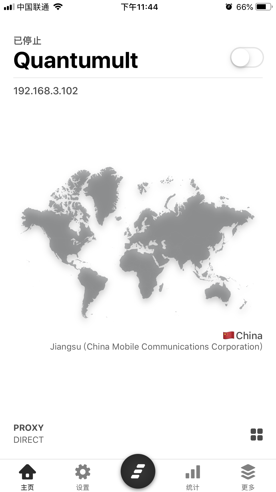

Quantumult 是 iOS 平台一款优秀的网络代理工具，它完整地支持 SS, SSR与vmess协议，故可以作为科学上网工具使用。 由于某些特殊原因，此类软件在中国区 App Store 已被下架，如需使用，请到非中国区（如美区、港区等）的应用商店付费进行下载（也可以找站长要）。 软件地址(需外区账号)
首先打开 Quantumult，首次打开时首页展示图如下：
点击底部 设置 Tab 进入到设置页面，然后点击 订阅,示意图如下：
点击右上角的 + 号，并在弹出的菜单中选择 服务器，示意图如下：
点击 名称 一栏，输入 自建（其实随便输啥都行，只是个名字），
确认后再点击 链接 一栏，然后从 用户面板 中复制 订阅地址（马赛克遮挡的部分，注意：此链接不能外露），
并粘贴在这里，然后确认，最后点击右上角的 保存完成后示意图如下：
添加完成后，会返回到之前的订阅管理页面，此时在 服务器 下的名为 自建 选项左滑，
会出现三个选项分别是 移除服务器, 更新, 删除，这里我们选择 更新，
完成后会提示 成功，到此节点订阅工作完成。此步骤的示意图如下：
在订阅管理页面，点击右上角的 +号，选择第二项 分流。此步骤的示意图如下：
同前面添加服务器步骤一致，分别在 名称 一栏输入 分流，在 链接 一栏输入：
https://raw.githubusercontent.com/ConnersHua/Profiles/master/Quantumult/Pro.conf
点击此处复制
并确认，然后勾选下面的 个性化 选项，点击右上角 保存。此步骤的示意图如下：
回到订阅管理页面后，同前面一致，在 分流 下的分流一栏左滑，并选择 替换，完成后会有成功的提示，然后会跳转到有一堆策略选择的页面，
不用更改直接点击 保存 即可，完成后会有成功提示。此步骤示意图如下：
同前面两点一样，回到订阅管理页面，点击右上角 + 后，在弹出菜单中选择 链接阻止，然后 在名称 中填写 去广告，链接 一栏复制以下链接：如下图所示
https://raw.githubusercontent.com/ConnersHua/Profiles/master/Quantumult/Rejection.conf
点击此处复制
此规则主要包含过滤一些广告、垃圾信息等内容，完成后点击右上角 保存，然后再次左滑并 替换。此步骤的示意图如下：
完成后回到 设置 页面，可以看到这里的 服务器, 分流, 链接阻止 三项都多了很多，表示更新完毕。
然后点击 底部Tab 中那个黑色的图标，选择你想用的线路，然后回到首页 主页，打开右上角的 开关,首次打开时会有添加VPN配置的提示，选择 Allow ，到此即可开始使用。
新手按照上述配置已经基本能够满足日常需求，更多的 Quantumult 高级功能及玩法可后续自行Google实现，比如回家连上WiFi自动断开代理，出门自动打开代理等。